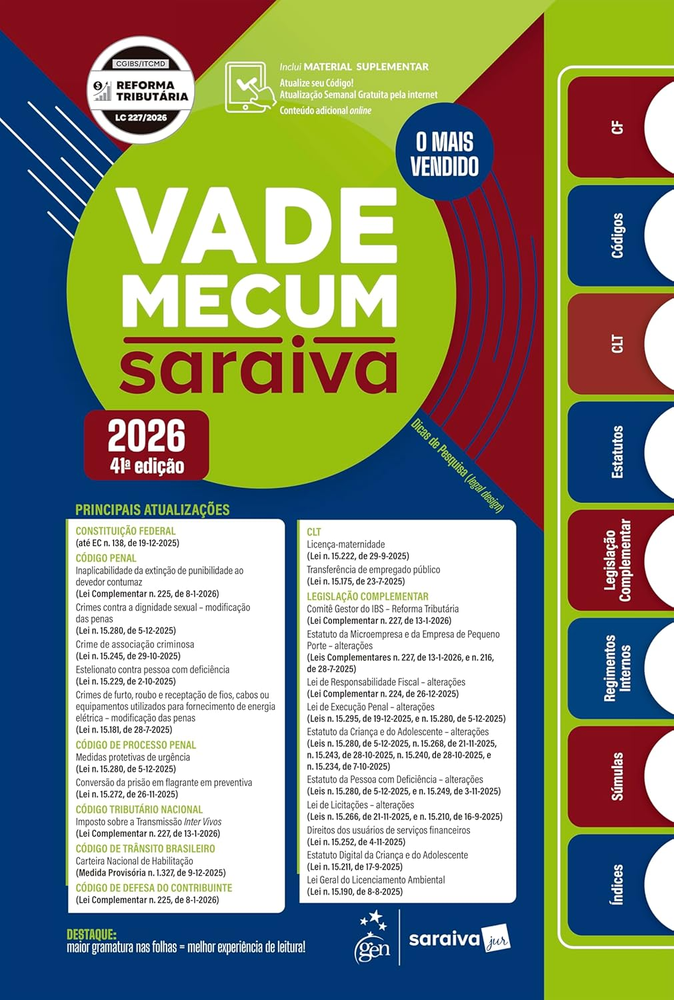
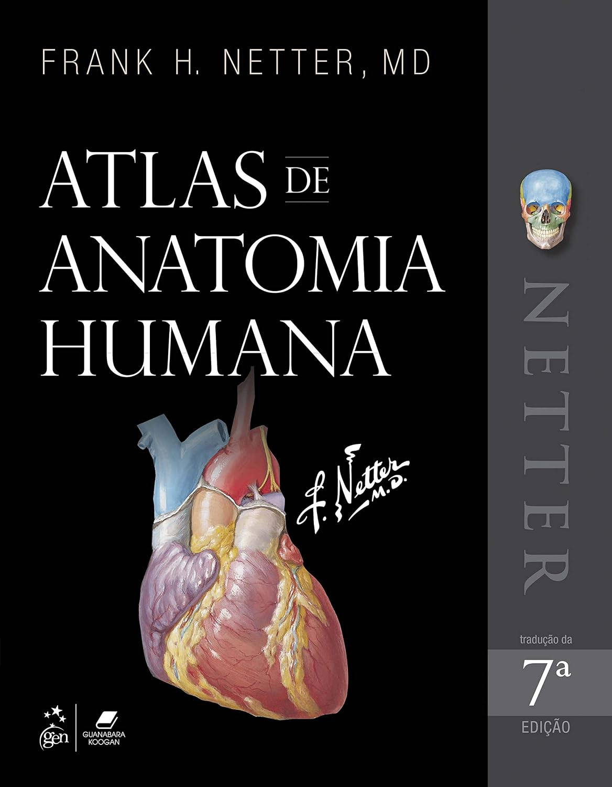
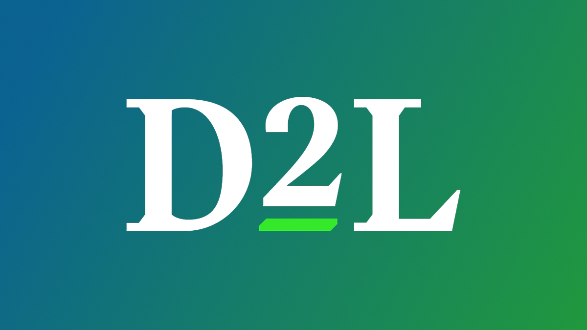

Tecnologia
Não Me Faça Pensar
A abordagem de bom senso à usabilidade na web, escrito por Steve Krug.
Saiba maisA Biblioteca Digital UniFECAF inspira sua jornada acadêmica com um ecossistema de aprendizado contínuo. Acesse instantaneamente os principais periódicos e publicações globais de forma acessível e interativa.
A UniFECAF Inspira não é apenas um repositório de livros, é um ecossistema de aprendizado contínuo. Nós rompemos as barreiras físicas para entregar na sua tela os principais periódicos, teses e publicações globais, estruturados para acelerar sua pesquisa.

Nossa interface foi arquitetada sob rigorosos padrões de acessibilidade e usabilidade. Queremos que seu foco seja inteiramente na absorção do conhecimento, garantindo que qualquer aluno, em qualquer dispositivo, tenha uma experiência de leitura impecável.
Explore os títulos mais recomendados pelos nossos coordenadores de curso.
A abordagem de bom senso à usabilidade na web, escrito por Steve Krug.
Saiba maisReferência mundial no ensino de cálculo e suas aplicações por James Stewart.
Saiba maisComo usar a inovação contínua para criar negócios radicalmente bem-sucedidos.
Saiba mais
A principal obra de referência acadêmica e profissional para estudantes de Direito.
Saiba mais
Ilustrações magistrais e foco na anatomia clínica por Frank H. Netter.
Saiba maisTécnicas para aprimorar relacionamentos pessoais e profissionais de forma empática.
Saiba maisNossa matriz presencial foi projetada para inspirar. Oferece espaços de coworking acústicos, salas de estudo individual e laboratórios de informática de última geração para suportar a Biblioteca Digital quando você estiver no campus.
Aberto 24h para alunos
Localizada no coração pulsante da inovação paulistana, a unidade Pinheiros foca em networking. Conta com acervos físicos exclusivos da área de negócios e tecnologia, totalmente integrados ao sistema digital.
Polo de Inovação
Entendemos que o aluno digital precisa de apoio real. Nosso polo EAD oferece suporte técnico em tempo real, tutores especializados de plantão e acesso VIP aos nossos periódicos internacionais.
Suporte 100% Remoto